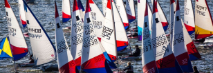
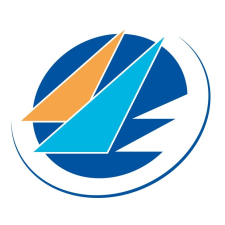
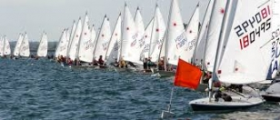
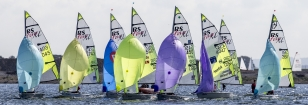
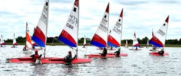
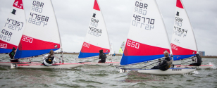

Queen Mary Junior Open Series
The Junior Open Series is a great opportunity for sailors from any club to come and take part in some friendly open racing. Open to all sailors with RYA Stage 3 or equivalent experience to get out racing. Coaches will be on the water and will provide some on water coaching as well as a debrief at the end of the day.
Junior Open Dates
Spring Junior Open - May 9th 2026, NoR & SI
Summer Junior Open - July 11th 2026, NoR & SI
Junior Bloody Mary (Pursuit Race) - October 17th 2026
Making the most of your day at Queen Mary Sailing Club:
- To enter and exit the main gates, press the intercom button on the lower keypad, await instructions and enter / exit on the green traffic light - on NO account 'tailgate'. The gate access code for the event will be issued upon registration.
- Do drop your boat off in the boat park which will be accessible from 08:30; then move car down to the Lower Car Park - please be aware that we have a single track roadway, so please be considerate to others, particularly if they are towing a boat and you are not!
- Come up the steps at the far end of the car park and you will find the Clubhouse at the top
- Do leave your dog at home - Thames Water bye-laws stipulate that no dogs are allowed on-site
- Do make a note of our entry/exit code for the event so you can leave the site without needing to buzz us on the intercom. There will be signs around the Clubhouse!
- When you register, do make sure that the sail number visible on your sail is the one you use on registration - to help our Race Management Team ensure all results are correctly allocated to competitors! Don't forget to let us know if you are sailing a Topper or RS Tera, which one ...
- Do feel free to enjoy the view from the Clubhouse and all the facilities - our caterers will be open throughout the day
- Please be aware that it is not possible to walk around the reservoir, so leave the gates shut and stay within the sailing club's grounds
- QM Team Staff will be happy to help - just look out for those with uniform and radios
- Anyone helping with launching and recovery (on pontoons or sloping banks) MUST wear a buoyancy aid - no one else is permitted on pontoons or the banks
- Do look after your own/your competitors' valuables
To make leaving the club later in the day easier, we recommend you moving trailers down once the first race is underway, then at the end of racing, walk your boat down and sort everything out in the Lower Car Park - this avoids congestion and speeds up the process of leaving after prize-giving.
Bookings

ENTRY - Queen Mary Junior Open
Get involved with Queen Mary's Junior Open series. A great opportunity to get onto the race course.
£35.00Book Now

HIRE - QM Junior Open Tera Sport
Get involved with Queen Mary's Junior Open series. A great opportunity to get onto the race course. This is for those booking a RS Tera Sport boat hire.
£35.00Book Now

HIRE - Queen Mary Junior Open ILCA 4
Get involved with Queen Mary's Junior Open series. A great opportunity to get onto the race course. This is for those booking an ILCA 4 boat hire.
£35.00Book Now

HIRE - Queen Mary Junior Open RS Feva XL
Get involved with Queen Mary's Junior Open series. A great opportunity to get onto the race course. This is for those booking a RS Feva XL boat hire.
£35.00Book Now
HIRE - Queen Mary Junior Open Tera Pro
Get involved with Queen Mary's Junior Open series. A great opportunity to get onto the race course. This is for those booking a RS Tera Pro boat hire.
£35.00Book Now

HIRE - Queen Mary Junior Open Topper 4.2
Get involved with Queen Mary's Junior Open series. A great opportunity to get onto the race course. This is for those booking a Topper 4.2 boat hire.
£35.00Book Now

HIRE - Queen Mary Junior Open Topper 5.3
Get involved with Queen Mary's Junior Open series. A great opportunity to get onto the race course. This is for those booking a Topper 5.3 boat hire.
£35.00Book Now